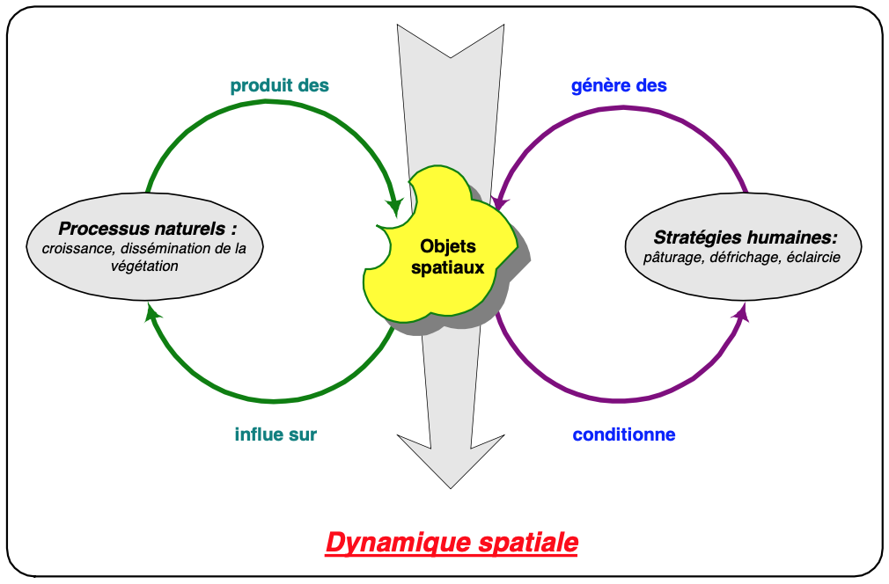
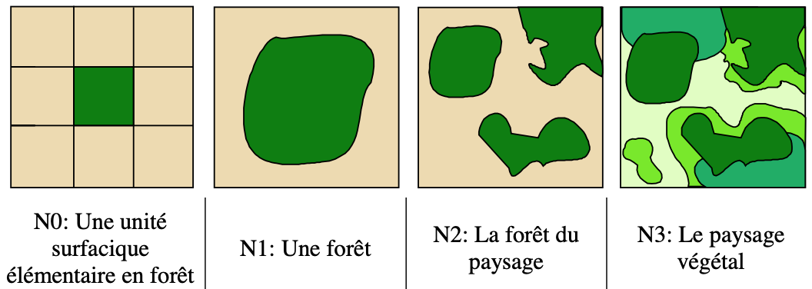

|
ForPastDynamiques de transformations de l'espaceSylvie Lardon, Inra ; Pierre Bommel, Cirad 
Le modèle ForPast permet d'étudier des dynamiques de transformation de l'espace. Il a pour but de simuler les interactions entre dynamiques de végétation et de pâturage. C’est la forme et l’évolution des objets spatiaux générés par ces dynamiques que nous mettons au coeur de la modélisation. Nous avons montré l’influence des configurations initiales de végétation et des stratégies spatiales de pâturage sur la maîtrise de l'embroussaillement. Nous analysons comment la conjonction des diverses dynamiques produit des configurations spatiales spécifiques :  Le modèle ForPast représente une grille de cellules dont les états peuvent changer a chaque pas de temps (le temps et l'espace sont discrétisés). Nous avons formalisé un système hiérarchique permettant de représenter l'espace à différents niveaux d'agrégation, de la cellule au paysage en passant par des agrégats de niveau 1 (type bosquet) et de niveau 2 (la foret):  Pour en savoir plus, contactez l'auteur. Voir également : Bommel P., Lardon S., 2000. Un simulateur pour explorer les interactions entre dynamiques de végétation et de pâturage. Impact des stratégies sur les configurations spatiales. Revue Internationale de Géomatique. Numéro spécial : SIG et simulations. Editions Hermes. pp 107-130. (PDF) Télécharger le modèle : forpast.zip (v. 2022) |
|